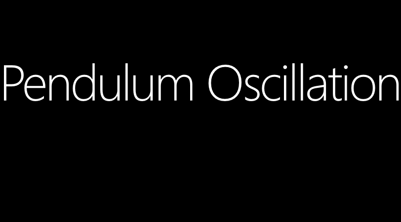

Set Environment for Windows 10 Development;
Now the Windows App Development is easier than ever before. By following some major key steps you can easily start developm;ent upon Windows. So to start development on Windows 10, first you must have to set your environment by follow these things;
i) You must have been on Windows 10 to build Universal Windows App for WINDOWS 10.
Watch on YouTube ↗&feature=youtu.beWindows 10 is the most exclusive and most stable Operating System so far. Part of the Windows NT family of operating systems.
ii) You must have to use any Edition of *Visual Studio 2015 to build Windows Universal Apps for Windows 10.
* (Visual Studio 2015 include universal app templates, a code editor, a powerful debugger, Windows Mobile emulators, rich language support, and more, all ready to use in production. Includes the Windows Standalone SDK and mobile emulators).[embed]Watch on YouTube ↗[/embed] Microsoft Visual Studio 2015 is the most powerful tool for every developer and every app. A rich, integrated development environment for creating stunning apps for Windows, Android, and iOS, as well as modern web apps and cloud services. [embed]Watch on YouTube ↗[/embed] If you have habit to use free or crack tools and you do not want to spend any money upon software, then congratulations Microsoft Visual Studio 2015 Community Edition is the most appropriate tool for you to do code. This is a free, fully-featured, and extensible IDE for creating modern applications for Windows, Android, and iOS, as well as web applications and cloud services. Visual Studio Community is free for individual developers, open source projects, academic research, education, and small professional teams with all relevant functionality which you required for development.
iii) Your Device which you are using for App development must have to be running software called Hyper-V (To Run Windows Emulators).
Hyper-V enables you to create a virtualized server computing environment. You can use a virtualized computing environment to improve the efficiency of your computing resources by utilizing more of your hardware resources. This is possible because you use Hyper-V to create and manage virtual machines and their resources. Each virtual machine is a virtualized computer system that operates in an isolated execution environment. This allows you to run multiple Emulators on your computer.Hyper-V is there in all the modern computers. So you do not have to be warried about it. Perhaps if you want to get some brief introduction then check out an introductory video bellow;
iv) You Need to Turn On the “Developer mode” of your Operating System.
 :: You can do this by going to 'Setting -> Update & Security -> For developers'
So when all is set then congratulations, you are good to go to develop Universal Apps on Windows 10 that will run on all Windows Platforms.
:: You can do this by going to 'Setting -> Update & Security -> For developers'
So when all is set then congratulations, you are good to go to develop Universal Apps on Windows 10 that will run on all Windows Platforms.
Perhaps! You must have some basic knowledge of Programing and App Development to move forward.


Comments are disabled on the static version of this site. To discuss this post, connect on LinkedIn.